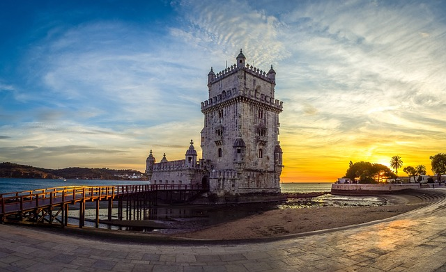
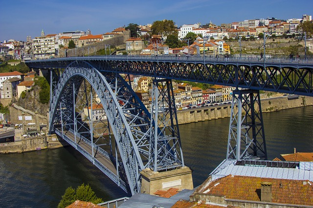
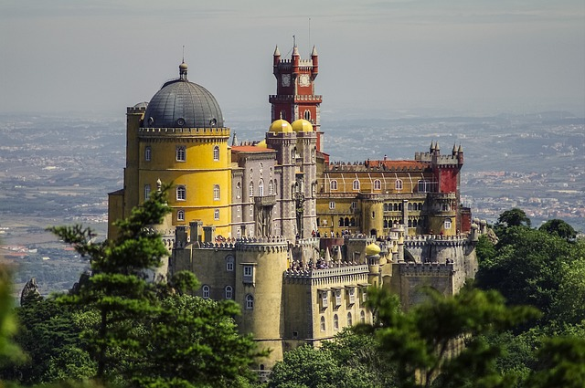

Portekiz, tarihi zenginlikleri, muhteşem manzaraları ve lezzetli mutfağıyla kendine hayran bırakan bir destinasyondur. Bu rehberde, Portekiz'i keşfetmek için ihtiyacınız olan bilgileri bulabilirsiniz.
Lizbon: Portekiz'in başkenti, tarihi dokusu, renkli sokakları ve manzarasıyla büyüleyici bir şehir. Belem Kulesi ve Jeronimos Manastırı gibi tarihi yapılarıyla ünlü.
Porto: Douro Nehri'nin kıyısında yer alan Porto, şarap üretimi ve tarihi dokusuyla tanınır. Ribeira Bölgesi ve Livraria Lello gibi görülmeye değer yerlere sahiptir.
Sintra: Masalsı atmosferiyle ünlü Sintra, renkli sarayları ve doğal güzellikleriyle büyüleyici bir kasaba. Pena Sarayı ve Quinta da Regaleira burada mutlaka görülmelidir.
